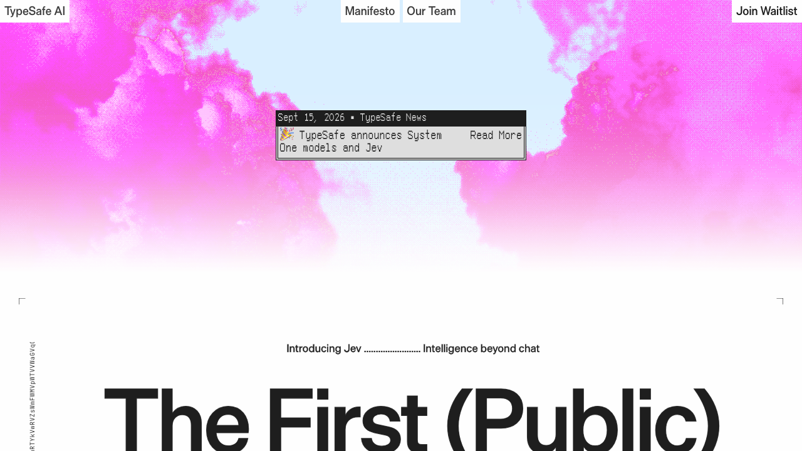

안녕하세요. dev.log입니다.
온라인 쇼핑몰에 상품이 아직 도착하지 않았다는 문의가 들어왔다고 가정해 보겠습니다. 답장을 쓰기 전에 배송팀으로 보낼지, 얼마나 급한 일인지부터 정해야 합니다. 고객마다 표현이 달라서 단어 몇 개만으로 분류하기 어려운 문의도 있습니다.
TypeSafe AI가 2026년 9월 15일 공개한 제브(Jev)는 프로그램이 다음 행동을 정할 수 있도록 선택과 확률을 돌려주는 AI 모델입니다. 고객에게 보낼 답장보다 그 앞에 있는 분류와 판단을 맡습니다.

배송 문의 한 건을 제브에 맡기면
다음은 작동 방식을 설명하기 위해 만든 가상의 문의와 응답 예시입니다. 아래 수치는 실제 제브를 호출해서 얻은 결과가 아닙니다.
고객 문의: “주문한 물건이 사흘째 도착하지 않았습니다. 내일 선물해야 하는데 배송 상황을 확인해 주세요.”
개발자는 이 문의와 함께 판단할 질문을 보냅니다. 담당 팀을 고르는 질문이라면 선택지를 배송·결제·계정으로 미리 정합니다. 제브가 가령 배송 92%, 결제 5%, 계정 3%를 돌려주면, 프로그램은 그 값을 읽어 배송팀에 문의를 배정할 수 있습니다. 문의 배정은 프로그램이 실행하고, 제브는 그때 사용할 판단값을 제공합니다.
같은 문의에 긴급도나 수령 기한이 있는지를 물을 수도 있습니다. 공식 문서는 질문을 다음 세 유형으로 구분합니다. 표는 이해를 돕기 위해 응답의 핵심 값만 간추린 예시입니다.
| 질문 유형 | 미리 정할 질문 | 가상의 응답 예시 |
|---|---|---|
| Choice: 선택 | 배송·결제·계정 중 담당 팀은? | 배송 92%, 결제 5%, 계정 3% |
| Score: 점수 | 여유 있음(0)·빠른 확인 필요(1)·즉시 확인 필요(2) 중 긴급도는? | 1.7점. 즉시 확인이 필요한 쪽에 가까움 |
| Noul: 참일 확률 | 고객이 특정 기한 전 수령을 요구하는가? | 0.85. 제브가 추정한 확률로는 85% |
공식 문서에서 문의 내용처럼 판단할 자료는 상태(state), 답의 형태를 미리 정한 질문은 정형 질문(typed questions)이라고 부릅니다. Choice와 Score는 선택값이나 점수에 더해 확률 분포와 신뢰도 정보도 제공합니다. Score의 점수는 단계마다 부여한 확률을 반영한 평균이어서 소수로 나올 수 있습니다. 세 유형의 질문은 한 요청에 묶을 수 있으며, 각 질문은 같은 자료를 보고 서로 독립적으로 평가됩니다.
이 예시의 92%는 모델이 특정 선택지에 부여한 확률입니다. 배송 문의를 실제로 100건 시험했을 때 92건을 맞혔다는 뜻은 아닙니다. 어느 정도 확신할 때 자동으로 배정할지는 개발자가 실제 문의로 검증해 정해야 합니다.
챗GPT 같은 언어 모델에도 분류를 시키거나 정해진 형식으로 답하게 할 수 있습니다. 제브가 내세우는 차이는 이런 판단을 위한 출력 방식에 있습니다. 문장을 한 단어씩 이어 쓰는 대신, 미리 정한 질문의 답과 확률을 병렬로 계산합니다. 고객에게 보낼 안내문이 필요하다면 그 뒤에 사람이나 생성형 언어 모델이 작성하도록 연결합니다.
디오고 알메이다와 챗GPT의 연결고리
제브를 만든 TypeSafe 창업자 디오고 알메이다는 2022년 InstructGPT 논문의 공동 저자입니다. 이 연구는 사람이 선호하는 답을 학습에 반영해 GPT-3가 지시를 더 잘 따르도록 만든 작업입니다. 알메이다는 GPT-4 기술 보고서에도 이름을 올렸습니다.
‘챗GPT 공동 개발자’라는 소개는 이 연구 이력에서 나온 표현으로 이해하면 됩니다. TypeSafe는 알메이다의 연구가 ChatGPT와 GPT-4로 이어졌다고 소개합니다. 논문으로 직접 확인할 수 있는 이력은 InstructGPT 공동 저자이자 GPT-4 기술 보고서 참여자라는 점입니다. 제브에서는 대화에 필요한 문장 생성보다, 소프트웨어가 반복해서 수행하는 판단에 초점을 맞췄습니다.
193.6배 빠르고 444.6배 저렴하다는 주장
TypeSafe 홈페이지는 193.6배 빠르고 444.6배 저렴하다는 수치를 내세웁니다. 문의가 들어올 때마다 AI를 부르는 서비스라면 속도와 호출 비용이 중요합니다. 다만 이 배수를 읽으려면 회사가 무엇을 비교했는지부터 확인해야 합니다.
공개 평가는 보안 사고, 에이전트 기록, 송장, 고객 서비스의 네 업무를 여러 개의 좁은 질문으로 나눕니다. 모델마다 같은 처리 절차를 수행하게 하고 네 업무에 동일한 비중을 줬습니다. 답의 품질은 공개 데이터셋의 독립 정답 대신 GPT-6 Astra와 Claude Fable 5.1이 낸 확률의 평균과 비교했습니다. 평가용 코드가 옳다는 가정도 들어갑니다.
TypeSafe도 내부 인력이 만든 업무 절차에 편향이 남을 수 있으며, 발표한 개선치가 실제 환경에서 얻을 수 있는 높은 쪽의 수치일 수 있다고 밝혔습니다. 발표 문구와 확인 범위를 나누면 다음과 같습니다.
| 홈페이지 문구 | 확인된 범위 | 아직 필요한 확인 |
|---|---|---|
| 193.6배 빠름 | 제브에 맞춘 회사의 네 가지 구조화 워크플로 평가 | 다른 지역·업무·입력 길이에서의 독립 재현 |
| 444.6배 저렴함 | 같은 평가의 API 비용 계산 | 장기 가격과 실제 운영 비용 |
| 기존 LLM과 비슷한 지능 | 회사가 정한 질문에서 기준 모델의 확률과 비교 | 공개 정답 데이터와 실패 사례를 포함한 외부 평가 |
공식 발표 가격은 입력 100만 토큰당 0.042달러이며 출력 토큰은 무료입니다. 토큰은 AI가 텍스트를 처리할 때 나누는 단위입니다. 회사는 요청을 보내고 응답을 받기까지 70~500ms가 걸린다고 설명합니다. 공개 속도 평가는 대체로 서비스가 위치한 미국 서부의 노트북에서 실행했으므로, 한국에서 같은 속도가 나오는지는 별도로 확인해야 합니다.
환각 0%의 정확한 범위
‘환각 0%’라는 문구도 앞의 배송 문의에 대입하면 뜻이 분명해집니다. 선택지를 배송·결제·계정으로 정했다면, 제브는 목록에 없는 부서를 새로 만들어 답하지 않는다는 주장입니다. 그렇다고 배송 문의를 결제 문의로 잘못 분류할 가능성까지 사라지는 것은 아닙니다.
TypeSafe가 보장한다고 설명한 대상은 미리 정한 출력 형식인 ‘스키마’와의 일치입니다. 회사도 0%가 실제 오답을 세어 얻은 수치는 아니라고 밝혔습니다. 출력 형식이 맞는지와 판단 내용이 맞는지는 각각 검증해야 합니다. 답이 애매한 문의를 사람이 다시 확인할 수 있도록 처리 경로를 두는 이유도 여기에 있습니다.
제브를 연결해 볼 만한 업무
제브를 검토할 만한 곳은 답의 후보를 정할 수 있고 같은 판단을 자주 반복하는 업무입니다. 이메일을 읽고 스팸일 확률을 구하거나, AI 에이전트가 사용할 도구를 정해 둔 목록에서 고르는 일이 여기에 해당합니다. Vercel도 9월 16일 AI Gateway에 제브를 추가하며 도구 선택, 재시도, 사람 확인 여부 같은 용도를 제시했습니다.
실제 서비스에 쓰려면 개발자가 자신의 프로그램에 API를 연결합니다. API는 프로그램이 다른 서비스에 요청을 보내고 결과를 받는 통로입니다. 9월 17일 기준 TypeSafe 콘솔은 초기 접근 단계이며, Vercel AI Gateway에서도 제브를 호출할 수 있습니다. 접근 권한이 있다면 공식 빠른 시작 문서에 안내된 Playground에서 텍스트와 질문을 넣어 보는 것부터 시작할 수 있습니다.
Jev라는 이름은 효율이 높아져 사용 비용이 내려가면 전체 소비가 오히려 늘 수 있다는 제번스의 역설에서 왔습니다. TypeSafe는 판단 비용이 낮아지면 AI를 쓸 곳도 늘어날 것으로 기대합니다. 국내 서비스에서 도입을 검토한다면, 이미 담당 팀이 정해진 한국어 문의를 제브에도 분류하게 해 보는 것이 구체적인 출발점입니다. 그 결과를 실제 배정 기록과 대조하고 응답 시간과 비용을 측정해야, 홈페이지의 큰 배수가 자신의 업무에서도 의미가 있는지 판단할 수 있습니다.